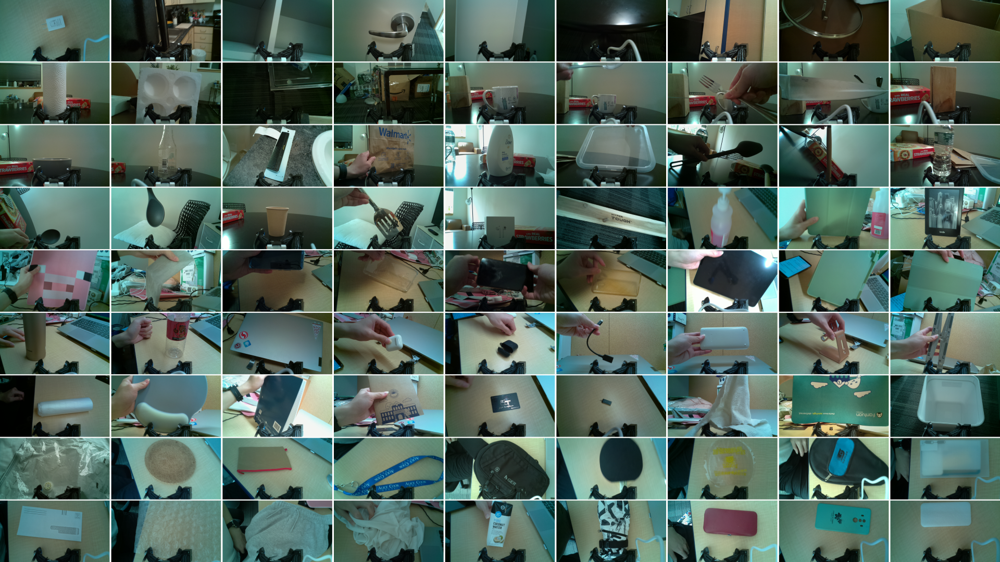
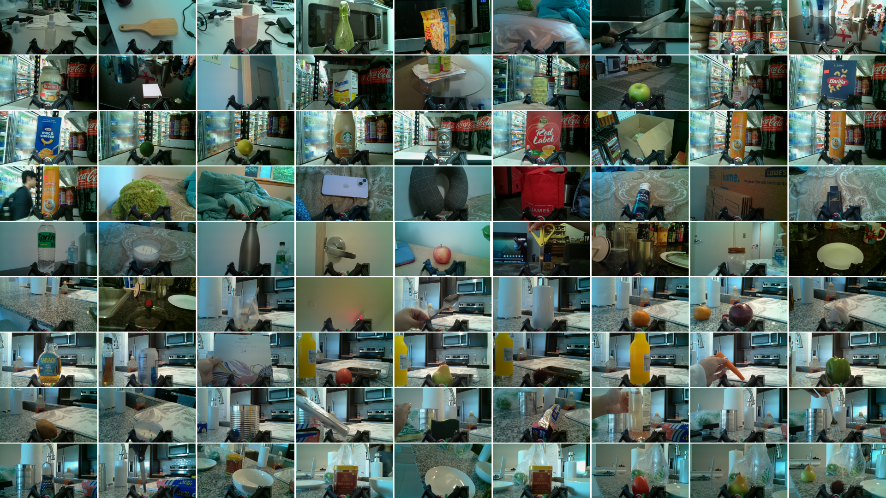
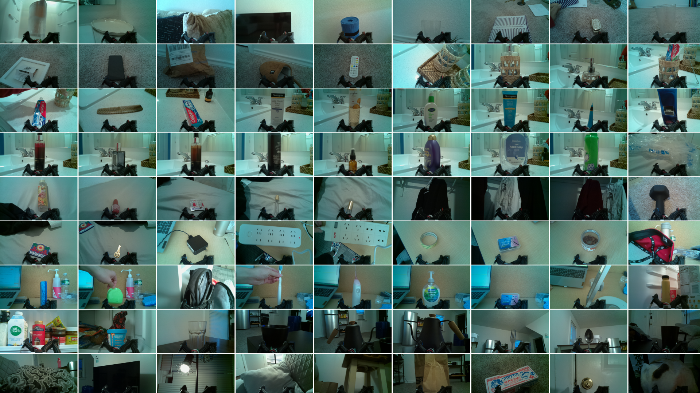
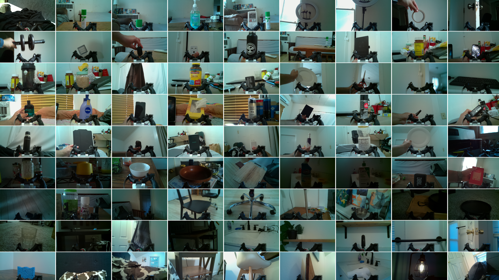

Haptic sensing enables robots to perceive object properties such as temperature, hardness, and texture, and manipulate objects effectively. However, the performance of state-of-the-art haptic sensing methods is limited by contemporary haptic datasets, which are relatively small and lack diverse, multimodal data. In this work, we demonstrate that in-the-wild multimodal haptic data collected at scale can power haptic perception models capable of material recognition in real-world scenarios. We introduce the CLAMP device, a low-cost (<$200) reacher-grabber equipped with sensors for five haptic modalities — active thermal, passive thermal, force, vibration, and proprioception — that features onboard power, storage and an interactive display for non-expert data collection. Using 16 CLAMP devices deployed to 41 participants, we compiled the CLAMP dataset, the largest open-source haptic dataset, which contains 12.3 million multimodal data points from 5357 real-world objects. We leverage our large-scale dataset to propose the CLAMP model, a visuohaptic model capable of performing material recognition in challenging conditions, such as under visual ambiguity and on data from asynchronous and intermittent contact. We show that the CLAMP model can be fine-tuned to learn other object properties such as hardness. Finally, we demonstrate the performance of the CLAMP model on robot data gathered from multiple robots and with varying end-effectors.
@article{TODO,
author = {TODO},
title = {CLAMP: Crowdsourcing a LArge, in-the-wild haptic dataset with an open-source device for learning a Multimodal robot Perception model},
journal = {TODO},
year = {2025},
}